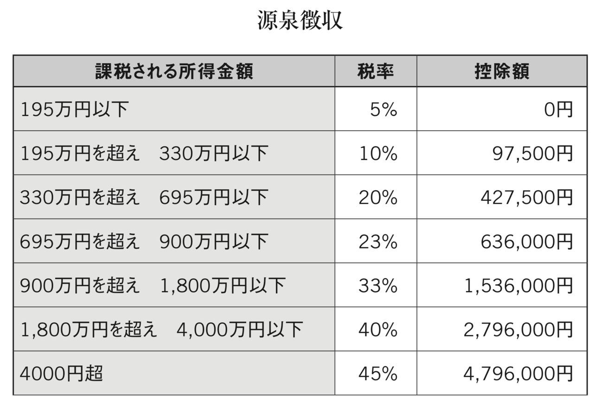
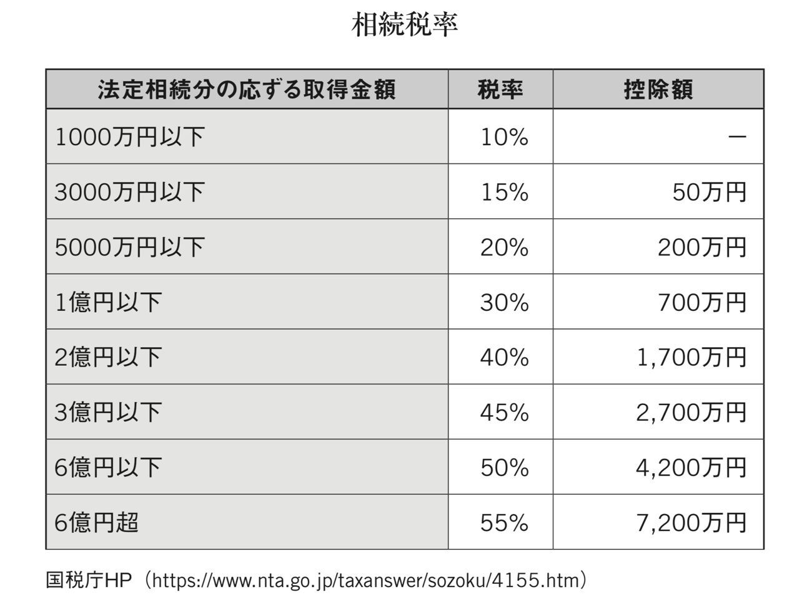
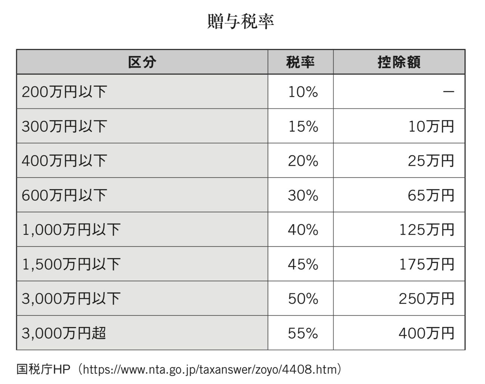
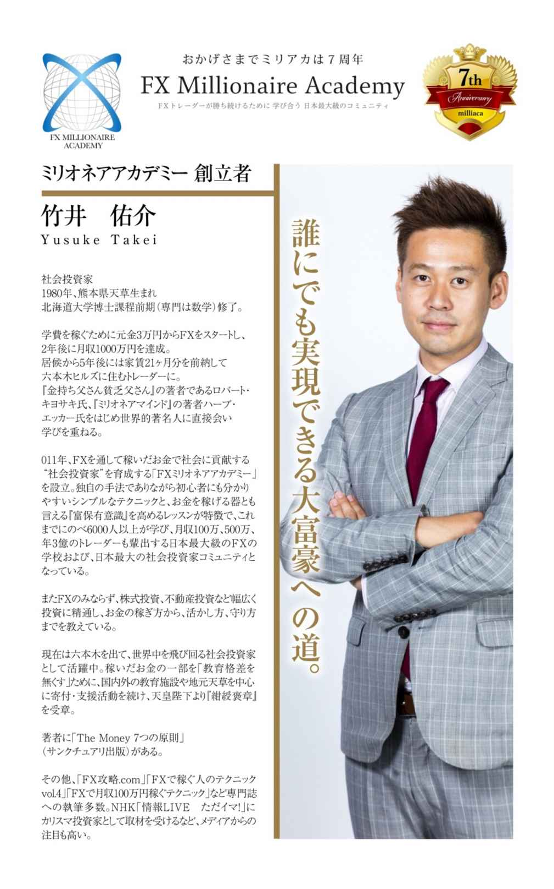

| ザ・マネー 7つの原則 第5章 お金の守り方 資産構築の5つのステップ | |
| 竹井 佑介 | |
| NEXT LEVEL (2018) | |
第５原則 お金の守り方 資産構築の５つのステップ
ｃｏｌｕｍｎ ４ なぜ私は４年落ちのベンツではなく４年落ちのポルシェのパナメーラを選んだのか
いよいよ本格的な資産構築についてお話しています。多くの人たちはまずはお金持ちになりたい、億万長者になりたいという思いを持って一心不乱に努力して行動を起こしていきます。そしてその稼ぐ理由かが自分のためだけではなく、家族の借金を返したい、苦労をかけている家族を楽にさせてあげたい、恋人の病気を治したい、地域復興、国の教育、世界の貧困、後世のため寄付したいなど、その思いが深ければ深いほど成功率は上がるものの、実はそこには落とし穴があります。それは税金です。
私たちは生活していく中で実に多種多様な支出を行っています。食費、家賃、レジャー交際費、など高額なものは多々ありますが、実はその中で最も大きい支出が税金であることに気付いている人はどれほどいらっしゃいますでしょうか？
外食すれば消費税がかかりますし、自宅で作る場合もお野菜、お肉、お魚など全てに税金がかかっており、自宅を購入すればマイホームといいながらも住宅の取得税や毎年の固定資産税を国に納めています。そして何より一番大きい税金は所得税です。累進課税と言いまして稼げば稼ぐほどその税率は上昇し年収が１，８００万円を超えた分に関しましては４０％、平成２７年からは４千万円を超える部分に関しましては４５％にもなりますので住民税の１０％と合わせると最大で合わせて５５％にも上ります （注） 。前述の通り９００万円を超えてきますと税率が法人税の方が安くなりますので個人事業主から法人成りするひとつのタイミングであることは述べてきましたが、会社勤めの方ですと、会社の給与を法人にするわけにはいきませんので会社で出世し稼げば稼ぐほどとんでも無い額の税金をお支払いすることになります。
そして保険のところでも述べましたが法人の社長様や役員様であれば小規模企業共済や、経営セーフティネット、生命保険を活用し節税しながら資産を構築することが可能でしたが会社勤めの方ですと大きく節税出来るものに制限がかかってきます。にもかかわらず最も税率が高くなってしまうのも会社員の方ですのでしっかりと節税しながら資産構築する方法について学ぶ必要があります。
そもそもですが、ご自身がいくら給与の中から税金を支払っているのか知らないという方ももしかすると多いのではないでしょうか。
そのためにまずは一度後自身の給与明細をご覧になってみてください。そこに源泉徴収という文字が見えるかと思います。何と給与の中からあらかじめ源泉徴収という形で引かれてお支払いされています。海外ではアメリカのようにご自身の税金を計算して毎年お支払いしているケースがほとんどで、そのため節税ということに対して意識の高い方も日本人よりは圧倒的に多いです。
この源泉徴収とは日本独自の制度でもあり元々は第２次世界大戦の際、戦費調達のために導入された制度で現在も脱税を防ぐことと、税金の支払いの簡素化を図るという名目で残っています。しかしながら、このせいであまりご自身がお支払になっている税金のことについて知らないという金融に対する理解能力（金融リテラシー）の低下を招いているひとつの原因かと思います。
この金融リテラシーを上げることがとても大切です。基本は節税しながらキャッシュフローを生んだり、価格が上昇したりしていくような資産を構築していくということです。
この第５原則では税金の中でも節税についてもっと理解を深め、それを応用することで実質の手取りの給料を引き上げ、また他からの収入も作っていくような方法について５つのステップで順を追ってお話していきたいと思います。
注 累進課税

平成２７年から４千万円超の部分が追加されました。以下国税庁のＨＰからです。
参考ＵＲＬ（https://www.nta.go.jp/taxanswer/shotoku/2260.htm）
まず会社員の方々にお勧めしたいのが不動産を購入されることです。
しかし不動産を購入するにも実は順番が大切なのです。よくお医者さんをはじめとした高額所得者の方は不動産を購入する際に、ワンルームなどの小さなものではなくいきなり１億円を優に超えるような一棟物を購入されたりするケースがよく見受けられます。私の考えではこれは完全にＮＯです。なぜなら一棟物は黒字物件で所得が上乗せされ高い税率を取られてしまうからです。それに対してワンルームマンションは赤字物件になるため利回りには表れない大きな節税効果が見込めます。そのため一見利回りは小さく見えても実質の利回りはそれよりも大きくなるということが多々あります。
例として元々お医者さんの給与が２千万円だった場合、一棟物の黒字物件で月に１００万円キャッシュフローが出るものを購入したとします。（金利分などの経費は既にひかれたものとします）この場合給与が２千万円と既に１，８００万円を超えているため最高税率が適用され住民税含め５０％もの税金がかかってしまいます。そのため１００万円のキャッシュフローのうち半分が税金として納めることになりますで、年間１，２００万円のキャッシュフローのうち何と６００万円もの収入が減ることになり、実際の利回りは半減してしまうことになってしまいます。これを順番を変えてからワンルームの赤字物件を購入した後に、同じ一棟物を購入したとするとどのようになるでしょうか？最初に主要な駅前などのワンルームの物件を２つほど購入し、その年に５００万円相当の赤字を作れたとします。すると、２千万円の収入から赤字を相殺し１，５００万円の年収になります。この時点で所得税が約２２０万円ほど安くなりますのでその分年収が増えた計算になります。しかも良い立地の優良物件であれば銀行からフルローンすることも場合によっては可能なため、手元の現預金が増えることになります。また勘違いしてほしくないのが赤字物件だからといってその年にキャッシュフローがその物件から無いかというとそうではありません。きちんとキャッシュフローが出ていてもワンルームは結果的に赤字ということになりやすいのです。その理由について説明していきます。
そもそもなぜ一棟物は黒字で、ワンルームマンションは赤字として計算されやすいのでしょうか。その答えは土地にあります。１棟物の場合は国立公園などで無い限りは通常その土地もついてきます （注） 。そしてこの土地の代金分は経費として認められないというところがポイントなのです。そのため１億円の一棟物の物件を購入したとしても、そのうち５千万円が土地代だとすると経費にあたるのが上物の物件のみになってしまいます。しかも上物の５千万円分は一発で経費にすることは出来ず、減価償却という形で最低４年から最大４７年かけて経費として計上されていきます。これが古い物件ともなると土地代金が８割以上で上物が２割となってしまったり、極端な例をあげると上物価値がゼロ円として計算され丸々土地代分のみの値段となってしまうことも日本の場合はあります。
アメリカ不動産の場合はどんなに木造の築古だとしても上物価値が７０％以上として評価されることが多いため、この減価償却によって大きく節税を取ることが可能になりますので５−３で詳しく説明していきます。
同じ考えで行くとワンルームマンションの場合は土地がゼロということにはなりませんが、物件が建っている土地をマンション内のお部屋の広さに応じて按分することになりますので、通常一部屋当たりの土地の持ち分はほとんど無いに等しいものになります。そのため購入額のほぼ全額が経費の対象となる上物の価格として計算されるため、減価償却の対象となる金額の割合が一棟物と比べてずっと大きくなります。築古の一棟物ですとほとんどが経費にならない土地代として計算されるものの、ワンルームマンションですとほぼ全額が経費になり減価償却される上物として計算されるため、その節税効果は大きなものになります。
また金融機関によって多少違いはあるかとは思いますが、大きい一棟物から小さいワンルームを買うよりも、小さいワンルームから大きい一棟物を購入する方がより銀行側から借り入れ出来ることが大きくなることが多いように感じます。しっかりとワンルームで節税を取りつつ税率を下げた上で一棟物の物件を購入した方がキャッシュフローもその節税によって下がった税率分増しますので良いかと思います。
また意外に知られていないのが例えば最も強固な造りであるＳＲＣ造の新築物件ですと法定耐用年数は４７年として計算され、分かりやすく４，８００万円で購入し土地代金がそのうち１００万円として計算された場合、４，７００万円を４７年かけて減価償却するため１年あたりたったの１００万円しか経費になりません。この理由から新築マンションは耐用年数の長さから銀行の借り入れはしやすいものの、短期間での経費にはなりにくいという特徴、弱点があります。しかしながらシステムキッチンなど償却年数は実は１５年に設定されていることを知っている方はあまりいらっしゃらないのではないかと思います。これを理解しているかどうかで日本不動産の使い方の幅が大きく変わってきます。以下具体例ですが、
１７年
昇降機設備（エレベーター）
１５年
電気・ガス供給施設利用権（都市ガスの負担金）
１５年
給排水衛生・ガス設備・冷暖房・通風・ボイラー設備（集中型）
１５年
水道施設利用権（水道市納金・負担金）
８年
消火排煙災害報知設備（スプリンクラー・火災報知機）
となっており、また舗装にかかった代金も、
１５年
コンクリート舗装
１０年
アスファルト舗装
で、減価償却することになっています。
そのため新しい物件だとしてもこれらの減価償却部分をうまく活用しながら経費をこまめに取ってしっかりと節税し資産を構築していくことが大切です。
そして何より不動産の凄いところは銀行からの借り入れが出来、自分の口座残高以上のレバレッジパワーを発揮することが出来るということです。株やＦＸをやるために銀行から借り入れは出来ませんが、不動産は出来るということが最も大きな違いですので、このレバレッジを正しく活用することです。ただし、きちんと勉強していないとこのレバレッジが逆にマイナス方向にも働きますのでくれぐれも注意が必要です。実際２２年を超える木造建築物は４年で減価償却が取れるため安易に購入すると、柱がシロアリに食われていて全部つぶして土地のシロアリも退治しなければならなくなり、減価償却どころの騒ぎではなくなってしまい完全なる大損になってしまいますのでご注意下さい。また１９８１年以前の旧耐震建築物も地震大国である日本においては気を付けなければなりません。そもそも銀行からの融資が十分に受けられないような物件は避けることです。折角、銀行が無料で査定をしてくれますのでこれを使わない手はありません。
最後に不動産をいくつか持たれたら次に行うのは不動産管理会社を作ることです。
そこで入ってくる家賃の一部を管理料として取得し、そこで出来たお金で法人保険に入られると良いかと思います。それが次のステップです。
注 国立公園の場合は土地を購入することが出来ないため通常は借地権となっています。私の友人も北海道の支笏湖のほとりにかなり大きな一軒家をダイビングショップOCEAN DAYSの宿泊施設用に購入しましたが土地は購入できず国から借りるという形になりました。ただその代金は多少制約があるとはいえ年間一坪１００円で１３０坪ですので年間１３，０００円程と非常に安い価格だそうです。
こちらについては第３原則のところでご紹介した通りです。まず保険の基本的な考え方としまして、保険は保障内容が大事なのは当然として、もっと大事なのは節税しながら流動性資産（すぐに現金化出来る資産）を構築出来るというところです。個人で保険に入るより法人で入られた方が節税を含めた貯蓄性で言えばずっとお得です。そのため、第１ステップの日本の不動産を購入された後は法人保険に入られると良いかと思います。もちろん日本不動産だけでなく、事業やトレードなどで大きなお金が入ってきて税金がその年大きく跳ね上がってしまうような時は保険を検討されると良いかと思います。その場合に復習ですが基本としてこの３つの、
①小規模企業共済
②経営セーフティネット
③生命保険
に、ついて頭に入れておかれると良いかと思います。ただしこの生命保険に関しましてはその時々で商品が大きく変わり、特に全額損金扱いになるような人気の保険商品などは出来てすぐに終わってしまう傾向にあります。そして本当にたくさんの保険商品がこの世の中にはございますので読者の方にとって最も良い条件の保険というものは担当者にご提案頂きなぜそれが良いのかを理解された方が良いかと思います。私の担当者はとても優秀な方ですので、保険の見直しも含め是非一度ご相談になってみられると良いかもしれません。保険は身体だけではなく、事業をやっていく際のお財布の面での万が一において活用出来るものです。もちろん解約返戻金がまだ低い状態にある時は当然として基本は解約するのではなく保険を担保に保険会社から借り入れすることです。そうすることで、すぐに現金化出来ますし、流動性の高い資産を構築出来るということです。もちろん金利はかかりますが銀行の金利とは意味が異なり、その間も保険の運用利回りと節税効果も出ているためほぼその金利分くらいは相殺されてしまう計算になるものがほとんどではないでしょうか。
ここでは海外不動産を使った「節税＋資産構築」の仕方について特にアメリカの不動産についてお話していきます。これは日本の不動産とアメリカの不動産に対する減価償却の制度の違いを活用したものになります。違いは大きく分けて４つあります。
１つ目は減価償却年数の違いです。アメリカの税法では投資目的の不動産の場合、アパートなど居住用の不動産だと２７年半、レストランやオフィースビルなどの商業不動産だと３９年で減価償却します。
しかし、日本の税法は大きく異なります。日本の場合は不動産登記法にありますが、構成材料による区分によって
・木造
・土蔵造
・石造
・
れんが造
・
コンクリーブロック造
・
鉄骨造
・
鉄筋コンクリート造
・
鉄骨鉄筋コンクリート造
と、８つに分類され減価償却の期間が定められていますが、次の基本的な４つの減価償却の期間はおさえておかれてください。
①木造２２年
②軽量鉄骨２７年
③重量鉄骨３４年
④ＲＣ、ＳＲＣ４７年
になります。
ＲＣ＝鉄筋コンクリート造
ＳＲＣ＝鉄骨鉄筋コンクリート造
となります。
この減価償却とは言い方を変えれば、そのものがどれだけ持つか（正式には法定耐用年数）ということです。日本の場合ですと木造は２２年はもつだろうということを意味しています。
２つ目は減価償却の起算についてです。アメリカの場合、中古で不動産を購入したとしてもその減価償却期間に関しましては一度リセットされます。例えば築１０年の居住用の不動産を購入した場合にも、また改めて購入日から２７年半の減価償却が適用されます。
日本の場合ではどうなるかと言いますと木造の場合、法定耐用年数は２２年のため次のように計算されます。
（２２年 ― １０年）＋（１０年×２０％）＝１４年
つまりアメリカでは年半にリセットされてしまう減価償却分が日本の制度では１４年で減価償却されるため、税制上非常に有利ということになります。
ではなぜこのような減価償却の違いが生まれるのでしょうか？ おそらく日本は地震や津波といった自然災害が多く、また四季もはっきりしていて夏は高温多湿なこともあり物件が傷みやすいという特徴があるからではないかと思います。実際２２年以上経過している木造物件ですとシロアリをはじめ主要な柱部分など建物の傷みはしっかりとチェックしておく必要があります。
それに比べてアメリカではロサンゼルスはじめ非常に気候が安定している地域も多く、また多湿ではないため木造も日本と比べて比較的痛みにくくなっています。そのため築３０年の木造物件であったとしても、新築と変わらないような値段で出回っていることも多々あります。それは融資付けをしっかりと行うことが出来るからです。
日本の不動産は築年数が古くなればなるほど減価償却期間が短くなるメリットがある一方で、残りの耐用年数が短くなることから融資付が非常に難しくなり結果的に中古の不動産市場価格は下落しやすくなっています。また逆にアメリカでは築年数が結構古かったとしてもしっかりと融資付が出来るため中古物件の価格が値崩れしにくく、むしろエリアによっては上がっていくことになります。
この違いとリーマンショック後の円高を利用してアメリカの物件を私も購入してきました。２０１３年１０月に購入したカリフォルニアのNorwalkというエリアの物件は２８万ドルで購入しましたが、この時のドル円レートは９８円ほどでした。為替差益だけでも現在１２５円ですので７５６万円の利益が出ており、更に物件価格はzillowというアメリカの不動産評価サイトでは３７万５千ドルの評価がついており （注） 、これをそのまま計算すると１１，８７５，０００円もの利益が出ておりトータルすると１９，４３５，０００円と１，９５０万円近い利益が出ていることになります。
この物件は５０％の頭金で購入していますので１，３７２万円ほどの投資に対して約１，９５０万円となると１４０％以上にもなる計算になります。正確にはここから減価償却や家賃によるローンの支払分を含めたキャッシュフローがありますのでもう少しリターンは上がる計算になります。
ただしzillow（http://www.zillow.com/）は推定価格であってこの辺りの物件の売れ行きをみていると２０１５年６月現在３１万ドル程度が妥当な水準ではないかと個人的には考えておりますが、値段が上がっているというのは非常に心強いものです 。
３つめの違いはローンの種類です。日本はリコースローンと言いまして仮に不動産を売却して損が出てしまった場合には、その損分を支払わなければなりません。しかしながらアメリカの場合はノンリコースローンというものがありリコースローンと比べ金利は少し上がるものの物件が担保になっており、仮に売却して損が出てしまってローンの残債を賄えなかったとしてもその分は支払わなくてもよくなります。その物件を購入する際にお金を貸した側つまり銀行がそれだけ貸せると評価したという責任もしっかりと取るといった制度になっているということです。これは投資家にとっては非常にありがたい制度でもしこれが日本にもあれば１９９０年代のバブル崩壊で、あそこまで個人がダメージを食らうことは無かったのではないでしょうか。
また、このような投資家保護の制度があるため積極的に不動産投資に挑戦しやすくなり、結果的に不動産価格も日本より下がりにくくなっているのでしょう。
４つ目は上物の割合です。これに関しては若干の誤解がある可能性があるため注意が必要です。アメリカの不動産の場合、築年数が古くても減価償却期間が変わらないことはお伝えしましたが、もうひとつ特筆すべきは上物割合になります。築年数が相当経っていたとしても７０％以上の上物割合であることが多く、ものによっては築２２年以上の木造でも８０％以上の上物価値になっている不動産も珍しくありません。アメリカの方が築２２年で購入した場合は２７年半の減価償却が適用されますが、日本の税制ですとたったの４年で減価償却出来てしまう計算になります。すると２千万円で８０％の上物価値とすると１，６００万円となりこれを４年で減価償却するということは年間あたり４００万円も経費として計上することが出来るというわけです。
しかも、不動産の場合は全部現金で買うわけではなく銀行のローンを使って購入する為、例えば頭金５０％の場合でしたら１千万円の投資に対して、４年間４００万円で計１，６００万円の経費が作れるとなれば、実際に支払った額以上の節税効果がたったの３年（４００万円×３年＝１，２００万円）であげることが出来ます。これを狙ってアメリカ不動産投資を行っているが多いのではないでしょうか。実際日本では築年数が経ったものはほとんどが土地価格として評価される話は前にもしました。
そのように銀行も考える為ローンも築古物件には付きにくいという弱点がありましたが、日本の不動産投資はあくまで相対取引となります。最初に若干の誤解があるのではということで注意書きしていたのがこの部分になります。相対取引ということは物件の売主と取決めをし、例えば極端な話３千万円の土地付きの木造築２２年の物件に関しまして、上物割合を７０％、土地割合を３０％とすることも可能です。そうするとアメリカ不動産と同じように減価償却を日本の物件でもしっかりと取ることが出来ます。またアメリカの不動産を購入するよりローンは日本人にとっては日本の物件の方がもちろんおりやすく、また金利も圧倒的に低いため良いかと思います。しかしながら日本で２２年以上の木造となると借入が難しく、気候の関係上、非常に物件が傷んでいる可能性が高いためその点だけはご注意下さい。
上記のような違いからアメリカの不動産投資はじめ、世界中の不動産投資についても「節税＋資産構築」、もしくは値上がり益を狙う「キャピタルゲイン」についてもチェックしてみられると良いでしょう。ソフトバンクの経営者、孫社長がタイムマシーン経営という言葉を使われていますが、投資の世界こそタイムマシーン投資出来るものはたくさんあります。
実際、私が現在フィリピンに拠点を構えているのもこれからＡＳＥＡＮ国内で成長率が１位になることと、平均年齢２３歳、人口のピークを迎えるのが２０５０年でセブ島に至っては２０８０年と言われているため、高度経済成長期の日本のようで、投資対象がたくさんあるからです。またカジノも国策として力を入れてやっており、今後日本でカジノがオープンした際にどのように投資を進めていくのが良いのかをフィリピンにてシミュレーションすることが出来るため、この分野についても積極的に投資を進めています。
そしてアメリカでは州毎に法律も異なり、別々の国が混在しているようになっているのが特徴です。その意味でこれから高度経済成長を迎える州のひとつが州税ゼロのテキサス州です。特にPlano地区はＴＯＹＯＴＡのアメリカ本社が移転してくることもあり関連企業だけでも数万人の人口増加が見込めますので、今後かなり面白くなるかと思い私もこちらでは減価償却目当ての物件と同様に新築も視野に入れて仕込んでいます。
不動産投資家は英語でアーティストと呼ばれることもあるくらい、様々な活用アレンジ方法があるため、日々学び研究することがとても大切です。
そして、次のステップとしてイレギュラーである特別減税についてご紹介したいと思います。
注
こちらから私のカリフォルニアのNorwalkの物件について観ることが出来ます。一軒一軒これだけ詳しく観ることが出来るのはアメリカの不動産の凄いところでもあります。
http://www.zillow.com/homedetails/11856-Los-Alisos-Cir-Norwalk-CA-90650/21370589_zpid/
国内外の不動産投資を使った「節税＋資産構築＋銀行レバレッジ」について説明してきました。次はその時しか使えない特別減税についてご紹介いたします。
日本だけでなく世界中でその国が特に力を入れたいと考えている分野に対して投資を呼び込むために様々な優遇税制がその時々で適応されます。日本でここ最近で言えば最も有名だったのが太陽光発電投資を中心としたクリーンエネルギーに関するグリーン投資減税ではないでしょうか。太陽光発電の場合、通常は有形固定資産の機械装置となり法定耐用年数は１７年のため、１７年間かけて減価償却されます。しかしながら東日本大震災の影響で原発の稼働が各地で停止されたことを受けました。この際足りなくなった電力を埋め合わせるためにＣＯ２排出権が関係し特別な費用が発生し環境にも多大な影響を与える火力発電よりも、自然のクリーンなエネルギーを活用した太陽光や風力、地熱などの発電の割合を日本でも増やそうという動きが生まれました。その際に出来たのがグリーン投資減税というものでした。その太陽光発電に対するグリーン投資減税の内容は以下の通りです。
平成２５年４月１日から平成２８年３月３１日までの期間内に取得し、その日から１年以内に事業用として使用した場合、その事業年度に３０％の特別償却ができ、残りの７０％を毎年５％ずつ定率で１４年で減価償却出来るというものです。実はその年に一括で償却出来るプランもありましたが、平成２７年３月３１日で終了しました。
このように一年で大きく「節税＋資産構築」出来るため、利益がたくさん出まくっているようなソフトバンクやＤＭＭなどの大企業では、その利益を相殺するためにたくさん太陽光発電に投資を行いました。ちなみにソフトバンクが投資する際に社外取締役のユニクロの柳井氏は大反対されていました。
また別の償却の仕方としまして産業用太陽光発電を取得するのにかかった費用の７％の税額控除が受けられますが、こちらの控除額は法人税・個人事業税（所得税）の２０％が上限となります。
ただこのグリーン投資減税の目玉はやはり一括償却でしたので、これまで程には太陽光発電をこぞって買うような動きは起こりにくいかと思います。
これだけの節税を取れつつ、国が電力の買い取り保証を付け、更にはとても融資に積極的な銀行もあり、フルローンが付く例もたくさんありましたのでこぞって購入されました。その為、その年に大きな利益が出た企業や個人の高額納税者の方々が、太陽光発電投資に殺到しました。しかもフルローンで組めた場合には手元からキャッシュが出ず非常にありがたい制度でした。
また、自宅を購入される際にも自宅の屋根につけたり庭に設置させたりすることでローンの全額を太陽光発電の売電収入で賄うようなプランも日照時間の長い徳島県などでは見受けられました。また私の友人の中には１千万円以上のオーバーローンを自宅に太陽光発電を設置することで成功した者もおりました。ちなみに投資用不動産の共用部分に設置した太陽光発電の売電収入は事業所得となり、自宅に設置した場合の売電収入は雑所得となります。
このように特別減税とはその時だけのものになりますが、非常に有効に働くものが多くあります。そのため、利益が大きく出そうな年には特にしっかりとチェックしておくことです。
最後のステップとして紹介するのは資産相続に関してになります。
資産相続の際におさえておいて欲しいことはまず現金で相続しないようにするということです。それは基礎控除額と言って相続する際にこの額までは税金がかからないという基準があるのですが、平成２６年１２月まで５千万円＋（１千万円×法定相統人の数）から平成２７年１月以降は３千万円＋（６００万円×法定相統人の数）に変更されました。この変更により一般的な４人家族（夫婦＋子供が２人）の場合、
旧基礎控除額では５千万円＋（１千万円×３）＝８千万円
新基礎控除額では３千万円＋（６００万円×３）＝４，８００万円
となり、なんと３，２００万円も減る計算になります。ただこれを観ても多くの方は４，８００万円も資産は自分には関係ないと思われるようです。しかしながら都心に住宅をお持ちの方は実はその評価額が優にこの控除額を超えているということもありますので十分に注意が必要です。また資産家の方におきましてはこれまでは相続税の最大は５０％だったのですが６億円を超える５５％にも上ってしまいますのでかなり注意が必要です。ここでは最後のステップということで資産家の方やこれから不動産によって資産を築かれるであろう読者の皆様方に向けて書いていきたいと思います。
相続税対策の基本は次の２つになります。やはりここでも不動産と保険です。現金は全額、株や投資信託などは時価に丸々相続税がかかってしまうため、相続するにあたって有効な資産に変えていくことが大事であり、またこの本の中で何度も出てきている通り「節税＋資産構築＋銀行の借り入れ」を意識して、相続税対策も行っていきます。
対策その① 不動産
土地や建物は利用状況に応じて財産評価基本通達に定められた評価減があります。
更地で土地を持っている場合は、路線価というものをベースに計算しますが、その土地の値段（購入価額 注）のおおよそ８０％の評価となります。その８０％部分に相続税がかかります。そしてここに投資用の賃貸アパートや賃貸マンションを建てることで更に路線価の評価額から２０％の評価減を行うことが出来るようになりこれを貸家建付地と呼びます。更に小規模宅地の特例を適用することで貸家建付地の評価額を５０％にすることが出来ます。
また一定の条件を満たすと、特定居住用小規模宅地、特定事業用小規模宅地として何と８０％の評価減になります。詳しく説明すると煩雑なため国税庁のＨＰをご覧になるのが良いかと思います。
国税庁（http://www.nta.go.jp/taxanswer/sozoku/4124.htm）
この条件にあてはまるように持っていけば土地の評価額がかなり下がりますから、相続税額も一気に下がります。
また、建物の相続税評価額は固定資産税評価額を元に計算されます。物件により多少異なりますが、一般的には時価（価額）の５０％～６０％程度と言われています。また、土地と同様に他人に貸していると更に３０％の評価減ができます。
文字で書くと非常に分かりづらいためひとつ例を出したいと思います。
購入価額 ５千万円（土地３千万円 建物２千万円）の場合、
土地
路線価評価（２０％減）
３千万円×８０％＝２，４００万円
貸家建付地評価（約２０％減）
２，４００万円×約８０％＝約１，９２０万円
小規模宅地の特例（５０％減）
約１，９２０万円×５０％＝９６０万円
特定居住用、事業用宅地の特例（８０％減）
約１，９２０万円×２０％＝３８４万円
建物
固定資産税評価額（約５０％）
２千万円×５０％＝１千万円
貸家評価（３０％減）
１千万円×７０％＝７００万円
となります。まとめると不動産投資をして相続すると現金に比べて大幅に相続税が安くなるということです。大型マンションの中の一室のワンルームの場合ですと土地代がほぼないと考えて建物評価だけで考えれば５０％×７０％＝３５％となり現金で相続するよりも相続税評価額がたったの３５％まで落とすことが出来ることになります。
また借入金の残額は全額債務控除となるので、相続税を大きく減額する効果があります。ただしその借金は返済可能なものでないと、返済に苦労することになりますので不動産の選定は非常に大切です。
不動産の選び方に関しましては第１ステップを参考にして頂ければと思います。
ただし不動産には固定資産税などが毎年かかってきますのでその点は注意が必要です。そのため六本木ヒルズや最近では虎の門ヒルなズどの超高級物件で値段の下がりにくいワンルームを相続税対策で購入され、亡くなられた後、相続しすぐに取得価格で売却されるケースは多く見受けられます。逆に投資家目線で見れば、昨今のように値上がり相場の時にこういった物件が市場価格よりもずっと安い値段でポッと出てくることがあるのでアンテナを張っておくと良いかと思います。
ただし不動産のデメリット部分ももちろんあります。その最大の部分が相続人同士の争いになりやすいということです。現金だとすんなり当分割で分けることが出来ますが、１つの不動産を２つに分けることは出来ないからです。ということで次は生命保険を使った相続対策についてお伝えいたします。
注
価格と価額の違い
価格はpriceで価額はvalueを指します。価額とは法律や規定などを元にした絶対的価値を表し、価格は売り手、買い手の合意によって決定された相対的価値を表します。
対策その２生命保険
生命保険金は現金で支払われるため、相続人の納税資金にしたり、財産分割の際の資金としたりして活用しやすいものです。更には５００万円×法定相続人の数が非課税になります。例えば法定相続人が３人の場合、前述の通り控除額が３千万円＋（６００万円×３人）＝４，８００万円となりますが、相続資産が６千万円と評価された場合には、６千万円―４，８００万円＝１，２００万円に相続税がかかっていますが、生命保険に１，５００万円分入っておいた場合には、非課税枠が５００万円×３人＝１，５００万円と丸々非課税になるため、６千万円―４，８００万円―１，５００万円＝―３００万円となり相続税がかかってきません。もちろんゼロ円とは言わないまでも控除によって相続税対象額が減ることで税率が減ることも大きいです。
国税庁ＨＰ（https://www.nta.go.jp/taxanswer/sozoku/4155.htm）
また保険金は受取人を複数指定することが出来るため、そこに遺志が出るため遺言と同じ効果があります。そのため遺産分割協議なども必要がなく無駄な争いを避けることが出来ます。
相続は争続と言われるように本当に争いの種になりやすいものです。

私は生まれが最寄りの駅から１００ｋｍもあるような田舎で生まれ育ったためこの相続の時には数々の残念な光景をみてきました。ほとんどの子供たちは外に働きに出て地元には顔を見せないことが多いのですが、亡くなる直前になって病院や介護施設から連絡が入り少しでも相続でお金を引っ張ろうとやっきになります。そしてこれまで介護をしてくれていた地元の周りの人たちや、親身になって介護していた兄弟を敵視して近づけないようにするなど非常に浅ましい姿を見てきました。
そのため相続のことはあらかじめしっかりと準備しておかれることが大事です。この本の読者様ですと将来の相続時に不動産を持っていることも多いかと思います。その場合には例えば次のような対策が考えられます。保険金の受取人を不動産の遺産を多く受け継ぐ長男にしたうえで、遺産分割協議の際、次男に渡す保険金を代償交付金と明記すれば贈与税などはかからなくすることが出来ます。
もし生命保険を次男にも同じように渡してしまうと、保険金とは別にそれ以外の遺産分割を請求することが出来るため注意が必要です。では保険の種類はどういったものが良いのでしょうか。まず相続税を支払うための資金としての活用も考えるのであれば、死亡保険金が一定である方が計画も立てやすいかと思います。そのため一生涯に渡り一定の死亡保障が確保でき死亡時に保険金が支払われる「終身保険」が基本となります。定期保険や養老保険の場合は、死亡保障が一定期間に限られる、その期間が過ぎれば死亡による保険金は支払われないため相続税対策としては向いていません。
次に契約の仕方ですが、「契約者、被保険者＝死亡者」、「保険金の受取人＝相続人」とすることです。例えば、
例①所得税＋住民税
契約者、保険金受取人＝相続者
被保険者＝死亡者
この場合保険を使って契約者が利益を得たと見なされ、所得税＋住民税がかかってきます。

例②贈与税
契約者
夫
被保険者
妻
保険金受取人
子
この場合は妻が亡くなり夫に保険金が入り、それを子に贈与する形となりますので贈与税となり負担は重くなります。
例③一時所得
契約者
子
被保険者
夫または妻
保険金受取人
子
一時所得の最高税率は２５％のため相続税の税率が３０％を超える場合には、有効です。最後に注意点ですが相続税対策を考えるとき、すでにある程度お年をめしてから加入をお考えになるケースが多いかと思います。そのため健康状態を損ねていたり、検査に引っかかっていたりして、加入できなかったり、保険料が割高になったりする可能性があるため、早めに何でも対策をしておかれると良いでしょう。若いほど健康状態もよく、また保険金支払い期間も長くなるため支払額も毎月分はより負担を減らすことが出来ます。このようにして終身保険を活用して相続税対策をすることで全てのステップが完了することになります。他にも生前贈与をうまく活用したり、生前に相続財産に含まれないお墓やお仏壇を購入したり、養子を迎えて基礎控除額を増やしたりする方法がありますが、やはり不動産と生命保険を使ったものが基本かと思います。
この第５原則は一生を通じて使える基本となりますのでしっかりと考え方をマスターしておいてください。資産は「節税＋銀行の借り入れ」を意識して資産を守って、増やして、相続していくことです。
減価償却の落とし穴
不動産投資においてとても重要なのが出口になります。つまり不動産を売却するときです。築２２年の木造物件で上物割合８０％のものとして５千万円で購入したものを６年後４千万円で売却したとします。すると５千万円×８０％＝４千万円が４年で減価償却されますので、簿価は１千万円となります。簿価とは資産または負債について適正な会計処理の結果（この場合は減価償却）として帳簿に記入されている数値のことを指します。この簿価をその時の物件の価値としてみます。そのためローン残高を４千万円、売却にかかった諸経費を２００万円とするとこの時の不動産の譲渡所得は、
４千万円―（１千万円＋２００万円）＝２，８００万円
として計算されます。つまり減価償却で節税の利益を取った分はちゃんと、この売却の際に利益として計上されやすくなるようになっているということです。しかしながら日本の場合は売却のタイミングが５年以内かどうかで譲渡所得に対する税率が大きく変わりますので、通常は５年を超える期間持ってから売却することが多いです。実際、
５年以内は短期譲渡所で３９％（所得税３０％
住民税９％）
５年を超える場合は長期譲渡所得で２０％（所得税１５％
住民税５％）
（ただし平成２５年から平成４９年までは、上記の他、復興特別所得税として基準所得税額×２・１％が課されます）
となります。そのため仮に減価償却された分が利益として計算されたとしても、税率が２０％であればかなり低くなりますので、不動産投資は節税しながら資産構築出来る良い投資方法のひとつとなりえるかと思います。
まず４年落ちの理由ですが、新車の法定耐用年数は６年になります。そして減価償却に関しましては、以前は定額法ひとつで
法定耐用年数（６年） （経過年数×８０％）
で計算され２年未満の場合は２年と計算されますので
１年経過した中古車：６ ―（１×０・８）＝５・２＝５年
２年経過した中古車：６ ―（２×０・８）＝４・４＝４年
３年経過した中古車：６ ―（３×０・８）＝３・６＝３年
４年経過した中古車：６ ―（４×０・８）＝２・８＝２年
５年経過した中古車：６ ―（５×０・８）＝２・０＝２年
６年以上経過した中古車：２年
と計算されていました。
しかし、２００７年の税制改正により減価償却制度が大きく変わり新定率法という基準になりました。この新定率法によると耐用年数が２年の資産については１年で償却をして良いということになりました。つまり、４年以上経過した中古車を購入した場合には１年で全て経費にすることができるというわけです。ただし、使用し始めた時から１２ヶ月分ということになりますので、期の途中に購入された場合には翌期に持ち越してしまいます。その期に大きな売り上げが上がると分かっている場合には４年落ちの車を買うこともひとつの節税手段としてあげられます。
ちなみに個人事業者は所得税法が適用されますので、所得税法の法定償却方法は定額法になってしまいます。所轄の税務署長へ償却方法の届出書を提出すれば定率法に変更出来ますので４年落ちの車を１年で償却したい場合には忘れず届出を出してください。
この車の選定も、とても大事になってきます。私は様々なカーディーラーをまわっていく中で初め「節税＋資産構築」のためベンツを買おうと考えていました。しかしながら多く出回っている私が求めていたベンツですと、買った瞬間に売る際には２割まで減額されてしまうとベンツ担当ディーラーから言われてしまい軌道修正。そしていきついたのが日本では８００台ほど（ポルシェ担当ディーラー談）とあまり出回ってはいないポルシェのパナメーラでした。そのためほとんど値下がりは無いとのことでした。実際約１年たった時に当時９００万円で購入したパナメーラを査定してみたところ７００万円の値が付き実に８０％近い値が付きました。
車を買う時の考え方は保険と不動産を合体させたものです。今回の車も不動産のように全額フルローンでしかも金利は２％未満の低金利、そして手元からお金は出ていないものの、全額経費になり多大なる節税効果。法人税３５％とすると９００万円×３５％＝３１５万円もの節税になります。更にはお金が必要になった時に売ることで支払が進んでいるのであれば多少なりともキャッシュを生み出すことが出来、保険の役割を果たすことも出来ます。
ただし、当然のことですが経費とビジネスで使用するということが大前提です。私の場合は国内外のＶＩＰ、お客様の送迎やオンラインでの自己ブランディングに活用しております。つまり、ビジネス上必要な購入であって実際ビジネスと無関係なものを経費とすることは出来ないためご注意ください。
その為車買うにしても家を買うにしても大きなお金を動かす時には徹底的に調べ抜いたうえで行動を起こされることが大切です。
